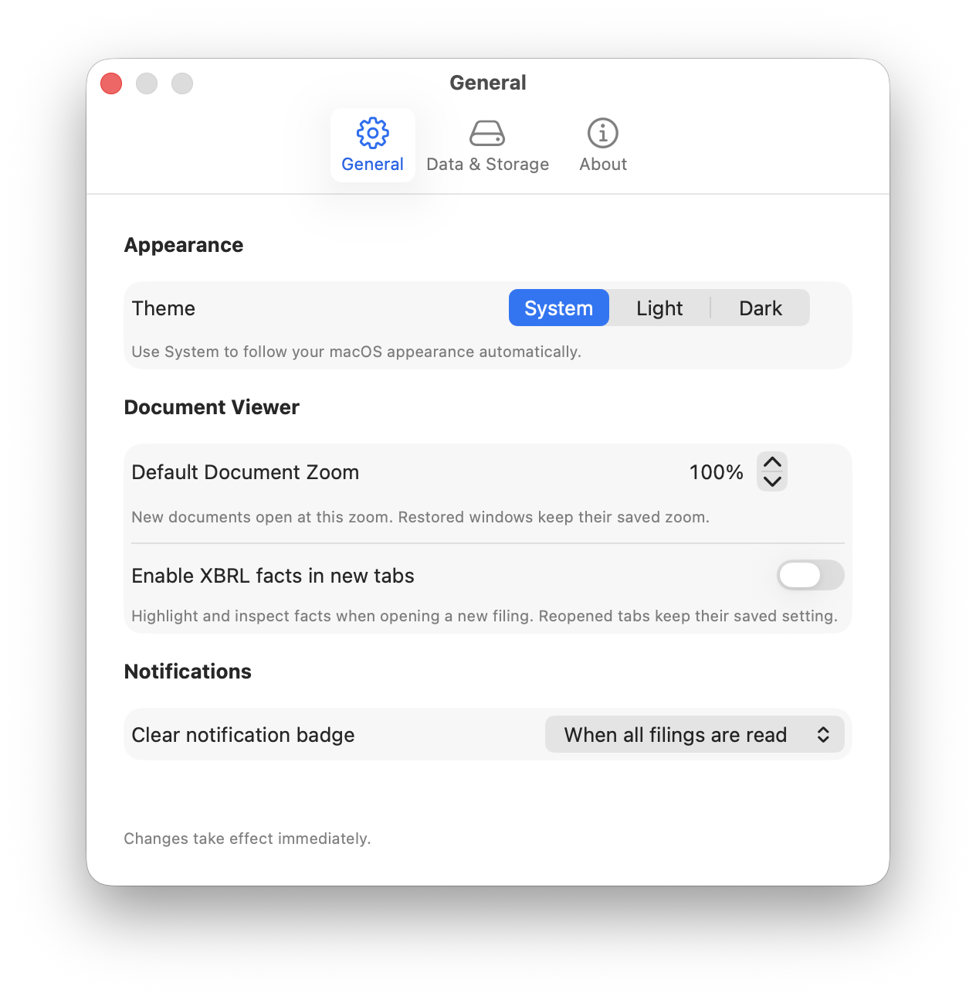

FilrAI Documentation Draft
Reference & troubleshooting
Shared settings, data details, and help with common issues.
Last updated
General settings and troubleshooting are documented below. The keyboard shortcut overview, data coverage, and storage reference are still being prepared.
Keyboard shortcuts
Planned coverage
A route to the Viewer’s dedicated shortcut reference.
Go to Viewer keyboard shortcuts →Settings & preferences
Open Settings from the app menu, or press ⌘,. The General tab controls appearance, new-document defaults, and the Filing Tracker notification badge. Changes take effect immediately.

Appearance
Theme offers System, Light, and Dark. System follows your macOS appearance automatically; Light and Dark keep FilrAI in the selected appearance.
Document Viewer
Default Document Zoom sets the opening zoom for new documents, from 50% to 250% in 10-percentage-point steps. Restored windows keep their saved zoom.
Enable XBRL facts in new tabs turns on fact highlighting and inspection when opening a new filing. Reopened tabs keep their saved setting. You can also show or hide fact highlights in the Viewer’s XBRL facts sidebar.
Notifications
Clear notification badge controls when the Filing Tracker’s bell indicator clears:
- When all filings are read: the indicator stays visible while any tracked filing is unread.
- When Tracker is opened: opening the Tracker acknowledges the current alerts and clears the indicator. Individual filings retain their read or unread status.
Data providers & coverage
Planned coverage
Providers, coverage boundaries, and source-specific limitations.
Local storage & AI processing
Planned coverage
Saved app data and which features use cloud AI processing.
Troubleshooting
General
Loading or export failed
Messages you may see
For loading failures, check your connection and try opening the original document in a browser. For uploads or exports, use a locally available source file, check free storage, and save to a writable local folder. If the issue persists, contact support with the exact error and the company or document involved.
Company search & filing downloads
A filing request fails
Messages you may see
Open the original filing on the SEC website to check whether it is available. For HTTP 403 or 429, wait before retrying; the request may have been blocked or rate-limited. For 404, return to the company’s filing list and open the filing again. For 5xx, retry later. Report a persistent failure with the filing URL and status code.
A summary cannot locate the required section
Messages you may see
FilrAI could not identify enough source text for this summary. Open the filing in the Viewer and use its outline or search to review the section directly. If the section is present, report the filing URL so its structure can be investigated.
No annual filing is available
Messages you may see
Confirm that you selected the intended company and check its available filings. This feature needs a supported annual filing; a company without one may still have other documents you can read in the Viewer.
AI chat, summaries & insights
AI is temporarily unavailable
Messages you may see
Try the feature again later. If it remains unavailable, contact support with the feature name and exact message.
The request is too large
Messages you may see
Ask a shorter, more focused question. Where the feature lets you choose source material, use less context. If a short question still fails because of the document or conversation size, report the document type and approximate length to support.
AI cannot read the document
Messages you may see
Check whether you can select and copy text in the original document. A scanned or image-only PDF may not contain the text needed for chat or summaries. Try a text-based PDF or the HTML version of the filing when available.
An answer fails or stops early
Messages you may see
Check your connection and retry once. For chat, narrow the question or request a shorter answer. For a summary, retry its refresh when available. If an answer stops before finishing, retry to get a complete response. If the failure repeats, include the feature and exact error in your support report.
Uploaded documents & IR material
A document source cannot be found
Messages you may see
Confirm that the original file is available locally and can be opened. Download it first if it is only a cloud placeholder. For IR material, reopen the source from the company’s materials list. If needed, import the original PDF again; keep existing notes and annotations until you have checked their source links.
An IR website blocks or returns the wrong document
Messages you may see
Open the company’s original investor relations page in a browser. If the document is available there, download the actual PDF and import it into FilrAI. Some sites return a webpage or access-check page instead of the requested file. For a temporary server error, try again later.
An IR snapshot fails
Messages you may see
Use the company’s original PDF when available. Include the original material URL when reporting a repeated snapshot failure.
Annotations & citation links
A PDF selection cannot be anchored
Messages you may see
Try selecting a shorter, continuous block of text. Check that the PDF contains selectable text rather than only an image.
A citation cannot jump to its source
Messages you may see
The citation could not be linked to a location in the current document. Review any source text shown in Chat and search for it in the original document manually. Verify the evidence before relying on the answer; report repeated failures with the source document and question.
Table extraction & Model Builder
A table selection cannot be read
Messages you may see
Wait for the document to finish displaying, then use Extract table to select a complete table region with visible rows and columns. Increase the zoom if the text is very small and retry the selection. Check the extracted values and column alignment before copying them into your spreadsheet.
No supported model filings are available
Messages you may see
Check which annual and interim filings are available for the selected company. A model can only be built from supported filings available for the requested periods.
Interim models are unavailable
Messages you may see
Switch Build Mode to AA and build an annual model. The selected issuer cannot currently be used for an interim-period model, or its eligibility could not be verified.
The XBRL model cannot be loaded
Messages you may see
Retry after checking your connection. If the same company continues to fail, report its ticker, build mode, historical-year selection, and any filing shown in the build status. You can still review the original statements in the Viewer; a readable filing does not guarantee that its structured data can be used to build a model.
Watchlists, Filing Tracker & Markets
A ticker cannot be added
Messages you may see
The ticker may not currently be supported in the Watchlist, or a matching SEC company may not be available for the Filing Tracker. If the ticker is correct but still fails, send support its name, ticker, exchange, and whether you were using the Watchlist or Tracker.
Market data will not load
Messages you may see
Check your connection and try loading the data again. The data provider may be temporarily unavailable. No observations means no usable values were returned for that request; it does not mean the value is zero. If the problem persists, include the series or currency pair and exact message.
Still stuck, or seeing a different message? Contact support with the exact error and the steps that led to it.
Contacting support
Email filr.support@gmail.com with the following details:
- Your FilrAI version and macOS version.
- The exact error message, what you were trying to do, and the steps to reproduce it.
- The relevant ticker, filing URL, or document type. For Model Builder, include the build mode and historical-year selection; for an export, include the file format.
- Whether the issue affects one company or document, or several, and whether retrying helped.
- A screenshot if it helps explain the issue. Remove private notes, confidential document content, and credentials before sharing.